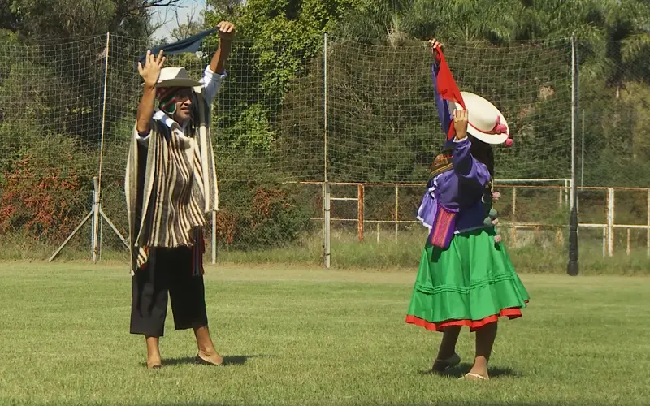
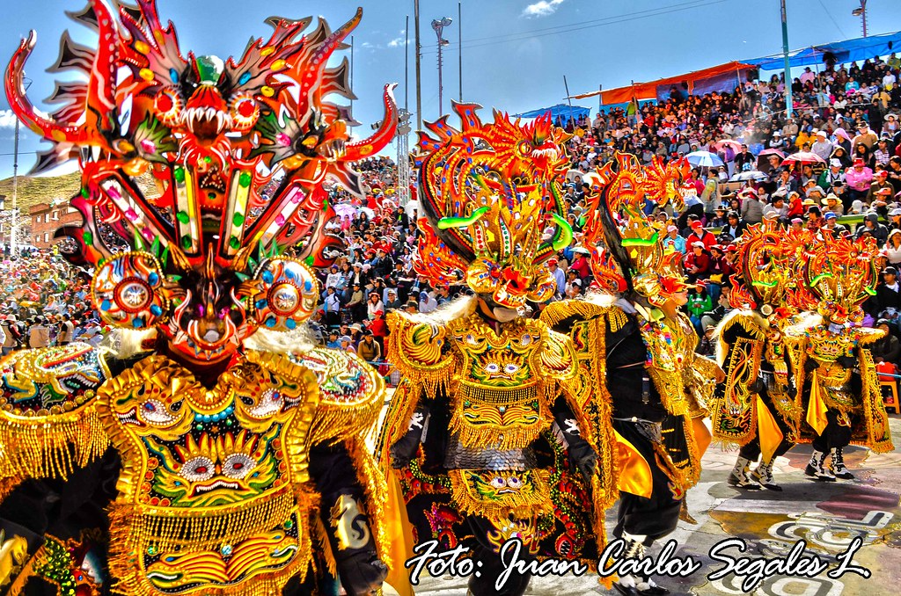

Cueca Cochabambina

Elegante, romántica y muy popular. La Cueca cochabambina es un juego de seducción usando una pañoleta, famosa en todo Cochabamba y Bolivia.
Bailecito
Alegre y rápido, típico del valle. Nació a partir de danzas europeas mezcladas con costumbres locales, creando una danza criolla originada en el sur de Bolivia.
Tinku

Su nombre significa “encuentro”. Antiguamente ritual de fertilidad; hoy se baila simulando la lucha por el amor de una mujer.
Diablada
Danza religiosa y prehispánica. Los bailarines usan máscaras y trajes elaborados. La leyenda cuenta que la Virgen del Socavón envió al Arcángel Gabriel para vencer a los diablos.